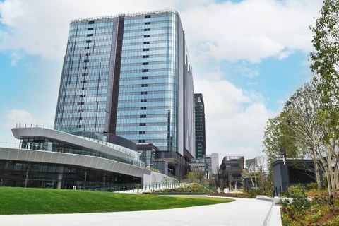
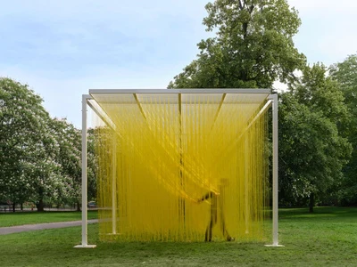
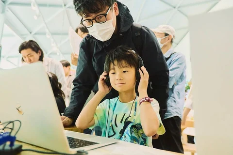
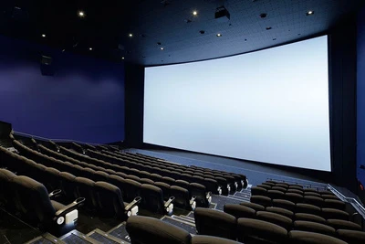

TRACKS PARK
NU PLAY
調整中触れる、動かす、聴くことで変化するサウンド・プレイグラウンド。インタラクティブ作品や音のオブジェを通して、自由に遊び、想像する場です。
PLAY / IMAGINE
遊び、想像する。
公園で作品に触れる。街の音を集めて、身近な素材で楽器をつくる。大井町では、子どもも大人も、遊びを通して街の風景や音を発見します。
TRACKS PARKのサウンド・プレイグラウンドやTRACKS LOUNGEのワークショップに加え、映画と生演奏を組み合わせる上映企画や、店舗の個性を活かしたNU CONNECTを企画しています。




TRACKS PARK
触れる、動かす、聴くことで変化するサウンド・プレイグラウンド。インタラクティブ作品や音のオブジェを通して、自由に遊び、想像する場です。
TRACKS LOUNGE
街の音を集めるフィールドレコーディング、身近な素材での楽器づくり、音の波や振動を目で見る実験など、子どもたちが音を発見するワークショップ。
The TRAVELERS HOUSE ROOFTOP BAR
街と空を一望する高層階で、大人も子どもも一緒に音楽を楽しめるデイタイムDJプログラム。
TOHOシネマズ大井町
映画作品とアーティストの生演奏、オーディオビジュアルライブ、Spatial Audioなど、映画館の映像・音響環境を活かす実験的なライブ。
OIMACHI TRACKS 参加店舗
インスタレーション、トーク、DJ、スペシャルプレイリスト、特別メニューなど、店の個性とフェスティバルをつなぐ企画。